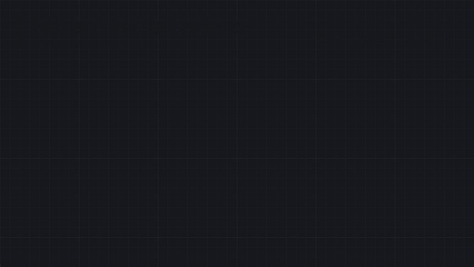

5 · UI, Structs & Interfaces
Afficher une interface (Widget Blueprint), regrouper des données (Structure, Data Asset), faire communiquer des Blueprints sans les lier (Blueprint Interface), nommer des états (Enumeration) et partager des fonctions utilitaires (Blueprint Function Library).
Widget Blueprint (UMG)
Un Widget Blueprint (préfixe WBP_, User Interface → Widget Blueprint) décrit un morceau d'interface : HUD, menu pause, barre de vie, inventaire. Il a deux onglets : le Designer (on place les éléments visuellement) et le Graph (la logique, comme un Blueprint normal).
| Widget | Rôle |
|---|---|
Canvas Panel | racine libre : positions absolues + ancres (HUD plein écran) |
Vertical Box / Horizontal Box | empile les enfants — menus, listes de boutons |
Overlay, Size Box, Grid Panel | superposer, forcer une taille, grille (inventaire) |
Text, Image, Progress Bar | afficher : texte, icône, jauge (valeur 0 → 1) |
Button, Slider, Check Box | interactions — événements On Clicked, On Value Changed… |
Dans un Canvas Panel, l'ancre d'un élément est le point de l'écran auquel il reste accroché quand la résolution change. Une barre de vie ancrée en haut à gauche y reste sur tous les écrans ; sans ancre adaptée, elle dérive ou sort de l'écran en 4K / ultra-large.
Afficher un widget
Remove from Parent).| Nœud | Effet |
|---|---|
Set Input Mode Game Only | le jeu reçoit tout l'input — HUD en jeu |
Set Input Mode UI Only | seule l'UI reçoit l'input — menu principal, écran de pause |
Set Input Mode Game and UI | les deux — inventaire ouvert pendant que le jeu tourne |
Set Show Mouse Cursor (PlayerController) | afficher le curseur — à coupler avec les modes UI |
Set Game Paused | met le monde en pause ; les widgets continuent de fonctionner |
Mettre à jour l'UI : binding ou événement
Un élément peut être bindé (bouton Bind à côté d'une propriété dans le Designer) : une fonction est alors appelée à chaque frame pour recalculer la valeur. Simple, mais coûteux quand les widgets se multiplient. L'alternative événementielle : le personnage prévient le widget seulement quand la valeur change (appel direct via la référence, ou un Event Dispatcher OnHealthChanged auquel le widget s'abonne).
Event Construct tourne quand le widget est créé en jeu (équivalent de BeginPlay). Event Pre Construct tourne aussi dans l'éditeur — pratique pour prévisualiser un widget réutilisable paramétré (texte d'un bouton, couleur) directement dans le Designer. Pour accéder à un élément depuis le Graph, cocher Is Variable sur celui-ci.
Blueprint Structure
Une Structure (préfixe S_, Blueprint → Structure) regroupe plusieurs variables sous un seul type — l'équivalent d'un struct en C++ / C#. Elle contient seulement des données, pas de logique.
Make et éclatées par Break.S_Item — membre | Type |
|---|---|
Name | Text |
Icon | Texture 2D (référence) |
Quantity | Integer |
Type | E_ItemType (une énumération, voir plus bas) |
| Nœud | Rôle |
|---|---|
Make S_Item | construit une structure à partir de ses membres |
Break S_Item | éclate une structure en ses membres (ou clic droit sur le pin → Split Struct Pin) |
Set Members in S_Item | modifie certains membres sans reconstruire toute la structure (les autres pins sont masquables) |
Une structure est une valeur, pas une référence : la passer, la lire dans un Array (Get (a copy)) ou dans un For Each Loop en crée une copie. Pour modifier l'original, utiliser Get (a ref) puis Set Members in …. Et éviter de renommer ou supprimer un membre d'une structure déjà utilisée partout : sauvegarder avant, les Blueprints qui en dépendent peuvent casser.
Une Data Table utilise une structure comme type de ligne : on remplit (ou importe en CSV/JSON) toutes les données d'objets, d'ennemis ou de dialogues, puis on les lit avec Get Data Table Row. Les données sortent du graphe, le Blueprint ne garde qu'un identifiant (Row Name). Pour quelques éléments riches (meshes, sons, héritage), un Data Asset convient mieux.
Data Asset & Primary Data Asset
Un Data Asset est un fichier de données à part entière : on définit une classe Blueprint qui décrit les champs (nom, dégâts, icône, mesh…), puis on crée un asset par élément (une épée, une hache…) et on en remplit les valeurs dans l'éditeur. Contrairement à une structure (une valeur copiée dans une variable), c'est un objet partagé que n'importe quel Blueprint peut référencer.
| Étape | Comment |
|---|---|
| 1. Créer la classe | Content Browser → Blueprint Class → All Classes → DataAsset (ou PrimaryDataAsset), nommée BP_WeaponData |
| 2. Déclarer les champs | des variables ordinaires : DisplayName (Text), Damage (Float), Icon, Mesh… Cocher Instance Editable (l'œil) sur chacune, sinon elle n'apparaît pas dans l'asset |
| 3. Créer les assets | Content Browser → Miscellaneous → Data Asset → choisir BP_WeaponData → DA_Sword. Les valeurs se remplissent dans son panneau Details |
| 4. Référencer | dans BP_Weapon, une variable WeaponData de type Object Reference vers BP_WeaponData, Instance Editable : choisir DA_Sword dans les Details de l'arme |
| 5. Lire | Get WeaponData → Damage, Mesh… (au BeginPlay, après un Is Valid) |
Un Data Asset est partagé : tous les Blueprints qui le référencent lisent le même objet. Modifier ses valeurs à l'exécution les change pour tout le monde (et, dans l'éditeur, peut même persister après l'arrêt du jeu). Ce qui évolue pendant la partie — munitions restantes, durabilité — vit dans l'instance de l'arme, pas dans l'asset.
Un champ Mesh ou Icon en référence normale (hard) charge l'asset pointé dès que le Data Asset est chargé : une liste de cent armes charge cent meshes. Utiliser des Soft Object References puis Async Load Asset pour ne charger que ce qui sert (voir Hard vs Soft).
Primary Data Asset
Un PrimaryDataAsset est un Data Asset qui possède en plus une identité (Primary Asset Id, de la forme Type:Nom, ex. Weapon:DA_Sword) connue de l'Asset Manager. Cela permet de retrouver et charger des assets sans les référencer en dur.
| Élément | Rôle |
|---|---|
| Project Settings → Game → Asset Manager → Primary Asset Types to Scan | déclare un type (ex. Weapon), sa classe de base et les dossiers à scanner : tous les assets trouvés sont inscrits dans le catalogue |
Get Primary Asset Id List | liste les identifiants de tous les assets d'un type, sans les charger — remplir une boutique, un menu de sélection |
Async Load Primary Asset | charge un asset à partir de son identifiant, sans bloquer le jeu ; la suite part sur Completed |
Get Primary Asset Id from Object | l'identifiant d'un asset déjà chargé |
Dans un SaveGame, stocker le Primary Asset Id de l'arme équipée (un simple texte), puis la recharger par Async Load Primary Asset au chargement de la partie. Une référence d'objet directe ne survivrait pas à la fermeture du jeu.
Sans besoin de retrouver ses assets par type ni de les charger à la demande, un Data Asset référencé directement fait le travail. Le Primary Data Asset sert aux catalogues (tous les objets du jeu), aux chargements asynchrones et au contrôle de ce qui est inclus dans le jeu final. Le type par défaut d'un Primary Data Asset créé en Blueprint pur vient de sa première classe C++ parente : vérifier dans Primary Asset Types to Scan que les assets sont bien reconnus.
| Besoin | Outil |
|---|---|
| Regrouper quelques valeurs dans une variable | Structure |
| Beaucoup de lignes identiques (équilibrage, butin, dialogues), éditables dans un tableur | Data Table (une structure comme type de ligne) |
| Quelques éléments riches, avec meshes, sons, références, héritage | Data Asset |
| Idem, à retrouver par type, charger à la demande ou référencer par identifiant | Primary Data Asset |
| Une liste fermée de valeurs nommées | Énumération |
Blueprint Interface
Une Blueprint Interface (préfixe BPI_, Blueprint → Blueprint Interface) est une liste de signatures de fonctions sans corps. Chaque Blueprint qui l'implémente écrit sa propre version. L'appelant n'a pas besoin de connaître la classe exacte de sa cible : il envoie un message.

Cast To.| Étape | Comment |
|---|---|
| 1. Déclarer | dans BPI_Interactable, ajouter une fonction Interact (entrées : Instigator ; sorties éventuelles) |
| 2. Implémenter | dans BP_Door : Class Settings → Implemented Interfaces → Add. Une fonction sans sortie apparaît comme un événement (Event Interact) ; avec sortie, comme une fonction à surcharger |
| 3. Appeler | sur n'importe quelle référence d'Actor : nœud Interact (Message) (icône d'enveloppe) |
| Tester | Does Implement Interface → booléen, par exemple pour afficher « Appuyer sur E » |
Un message envoyé à un Actor qui n'implémente pas l'interface ne fait rien, sans erreur. Un Cast To BP_Door fonctionne pour une seule classe et crée une dépendance forte (la classe castée est chargée en mémoire avec l'appelant). Un Event Dispatcher sert au sens inverse : un objet annonce « il s'est passé quelque chose » à ceux qui se sont abonnés, sans savoir qui ils sont.
Énumérations (enum)
Une Enumeration (préfixe E_, Blueprint → Enumeration) est une liste fermée de valeurs nommées. C'est l'équivalent Blueprint d'un enum class C++ : sous le capot, un UENUM(BlueprintType) enum class EItemType : uint8. La valeur est stockée sur un octet (256 entrées max).
E_PlayerState | Plutôt que… |
|---|---|
Idle, Walking, Running, Attacking, Dead | cinq booléens IsIdle, IsWalking… qui peuvent se retrouver vrais en même temps par erreur |
| Nœud | Rôle |
|---|---|
Switch on E_PlayerState | une sortie d'exécution par valeur — l'équivalent du switch |
Select | choisit une valeur selon l'enum (ex. vitesse max selon l'état), sans exécution |
== / != | comparer à une valeur précise |
Enum to String / to Name | afficher la valeur (débogage, UI) |
For Each E_PlayerState | parcourir toutes les valeurs (remplir un menu déroulant, par ex.) |
Conversion en Byte | obtenir l'index numérique (0, 1, 2…) |
Les trois se combinent bien : une Map E_ItemType → S_ItemData ou une Data Table dont une colonne est un enum. Et une enum fait une excellente variable d'état pour l'Animation Blueprint (transitions de la State Machine selon E_PlayerState). Ajouter une valeur à la fin de l'enum : insérer au milieu décale l'index numérique des valeurs suivantes (conversions en Byte, sauvegardes qui stockent cet index).
Blueprint Function Library
Une Blueprint Function Library (préfixe BPFL_, Content Browser → Blueprint → Blueprint Function Library) est un asset qui rassemble des fonctions statiques : elles n'appartiennent à aucun objet, n'ont pas de self et s'appellent depuis n'importe quel Blueprint — Actor, Widget, Animation Blueprint, Level Blueprint — sans référence ni cast. Les fonctions apparaissent dans la palette d'actions comme les nœuds du moteur (Distance, Clamp…).
| Aspect | Ce qu'il faut savoir |
|---|---|
| Créer | un asset BPFL_Utils, puis Functions → + comme dans n'importe quel Blueprint (entrées, sorties, variables locales) |
| Appeler | clic droit dans un graphe, chercher le nom : aucun pin Target, aucune référence à fournir |
| État | aucune variable membre, aucun Event Graph : une fonction de bibliothèque reçoit tout par ses entrées et ne retient rien d'un appel à l'autre |
| Contexte du monde | pour toucher au monde (Get Player Controller, Spawn Actor, un timer…), lui passer un objet en entrée — n'importe quel Actor, souvent le self de l'appelant — et le brancher sur le pin World Context Object des nœuds |
| Nœuds latents | refusés, comme dans toute fonction (voir Fonctions) |
| Pure | très courant : un calcul sans effet de bord devient un nœud vert, utilisable partout |
| Bon candidat | Exemple |
|---|---|
| formatage | FormatTime : secondes → « 03:25 » |
| maths utilitaires | RemapAngle, distance horizontale entre deux Actors, arrondi à un pas |
| validation | IsPlayerAlive (Actor → bool) qui regroupe Is Valid et le test de vie |
| accès fréquents | GetMyGameInstance : Get Game Instance + Cast vers la bonne classe, écrits une seule fois |
| Où mettre ce code ? | |
|---|---|
| Function Library | un utilitaire sans état, utile à plusieurs Blueprints sans rapport entre eux |
| Fonction dans un Blueprint | elle lit ou modifie les variables de cet objet |
| Fonction d'un parent (héritage) | un comportement commun à une famille de classes, surchargeable — voir Orienté objet |
| Macro Library | un motif de flux à plusieurs sorties d'exécution — voir Macros |
| GameInstance | un état global qui doit survivre aux niveaux |
Charger un Blueprint qui appelle une fonction de la bibliothèque charge aussi la bibliothèque — et tout ce qu'elle référence en dur. Une fonction qui fait un Cast To BP_Boss oblige tous les appelants à embarquer BP_Boss. Écrire des fonctions génériques (types de base, Actor) et répartir les utilitaires en plusieurs bibliothèques par domaine (BPFL_Math, BPFL_UI…).